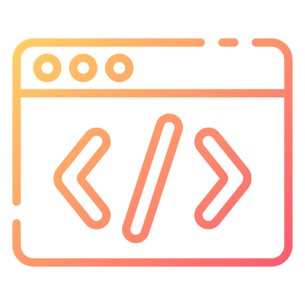

Antônio Maurício
Desenvolvedor fullstacks Júnior
-

-

- 
Informações
Sou uma pessoa que esteve sempre em contato com a tecnologia desde muito cedo. Com meus 7 anos gostava muito de saber como funcionava a internet, sites, apps, a tecnologia em geral. Ate que descobri a programação, eu amo muito a parte de Front-end, pois criar algo agradavel aos olhos é uma das coisas que eu faço desde cedo. Então iniciei um curso em uma Etec de Desenvolvimento de Software (DS), atualmente estou cursando seu primeiro módulo. La percebi que tem toda uma mente por trás da inteligencia, ou melhor dizendo... o famoso Back-end. Lá estudei HTML, CSS, JavaScript, c++, Banco de dados, Fundamentos da Informatica, Design, OSA e Inglês Tendo seu aprofundamento em Programação Web e Programação e algoritimos. Gosto muito de estudar, colocar minha ideias em pratica. Meus principais hobbies são ver animes, ler um manga e estudar.
conhecimento